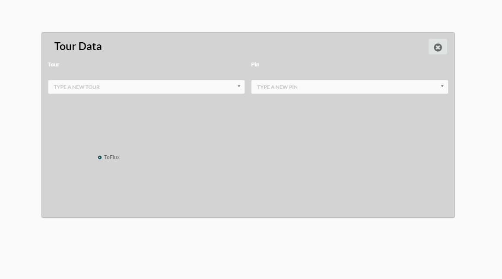

Flux Factory
position : Application Engineer(Computational Designer)
Code Block
[GitHub]Flux-Labs
Background
Code Block in the Flow tool of Flux can be createdis a text edit tool where people use Flux Geometry API or library as a form of Javascript that run in the Flow on the Flux web platform. Flux is not only to work for saving and sharing geometry or BIM data from platforms to platforms, it also provides with a place to hijack the data to manipulate it on the web environment and populate the data to other platforms(e.g. Rhino, Grasshopper, Revit, Dynamo, SketchUp, 3ds max) in a real time. In the Code Block, designers can do geometry computations, data visualizations, and so on. In addition, designers could share the algorithm of Code Block to other people or to other projects.
To enrich the library, I convert and create several Code Blocks from simple tasks, such as MeshExtrusion or FindPoint function, to complex tasks such as Grid Optimizer or Solar Vector that can possibly be reused by general users or projects. Plus some of the functions came from the Parkerator Phase 1 and 2 projects.
Objective
- Developing Code Block that in run on the web environment to solve a single problem in computational design
- Sharing the logic with other users or projects
- Hijacking and modify the geometries while transforming in different platforms in the real time update.

Viewshed analysis(region feature)
Background
It should allow the user to input a set of meshes representing a physical site (including buildings, terrain, or any other possible view obstacles), a set of meshes representing visible features, and a set of windows from which to calculate viewsheds. From each window’s center, the workflow will detect whether each feature mesh is visible, and to what degree (scaled from 0.0 to 1.0). Then it will calculate a cumulative score for each window, weighting the different features by scalar factors. Finally, it will visualize these scores over their respective windows.
my goal in this project is to create a function that popuate the given number of point with in the meshes representing visible features.
Objective
- Generate a set of points with the given mesh
The Polyline class has two functions to achieve it. First one is “GetVectorGridByDis” function which creates point grids in the shape. Then “GetVectorGridbyOptimizationWithDistance” function analyzes the number. If the number of point is above the target number of point, then the first function will execute with the increased distance for the grids, and the loop will be execute until they reach the number with the tolerance.


Immersive representation (FluxVR)
Background
I worked with a team of engineers to continue the development of a web application which linked the Unity Engine to the Flux platform. Flux being a cloud-based platform, the geometric data could be send and consume by any other tool. The idea is that the Flux Unity instantly create a VR environment with the geometry living in Flux on web browser. That way, in a few clicks or by simply touching a screen, designers are able to generate a VR mock-up of their models, share it with other designers or clients sending a simple url, and communicate each other by adding comments in the model.
Objective
setting up the Unity to create and share VR environment in real time update
UI
As the first task, we need to develop a UI menu that communicate Flux server and Unity, for example, Solar panel was added to communicate between Flux and web interaction.

solar panel(left top, and right top)
basic UI (middle bottom)
Tour Mode and Tour Graph Class
Bascially, user can attach camera position and comment on the opend project. so TourGraph and tree visualization were created.

Function : TourGraphAndVis_AddPin

Function : TourGraphAndVis_AddTourAndPin
Function : TourGraphAndVis_VisPin
Conclusion
Tour Graph Class in Javascript is spcialized to deal with a data in a tree data streucture. you can easily add and remove a Tour in the project, and also add and remove a comment in the Tour. In addition, it could pass the data to Flux Web Server to save and process the data as a form of JSON.
Copyright 2016. Flux Factory. ALL RIGHTS RESERVED.